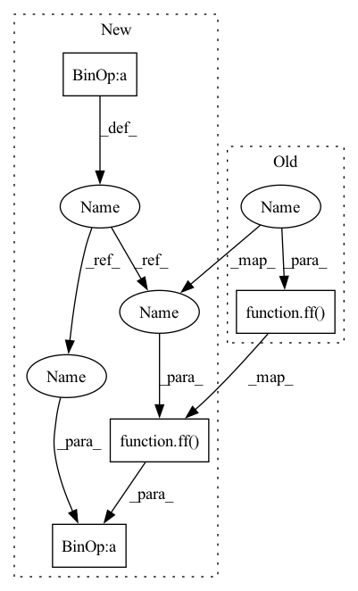

Pattern ID :29557
Before Change
def forward(self, x, context = None, mask = None):
for (self_attn, ff) in self.layers:
x = self_attn(x, mask = mask)
x = ff(x )
return x
class Decoder(nn.Module):
def __init__(self, dim, depth, dim_head = 64, heads = 8, cross_attend = False):After Change
]))
def forward(self, x, context = None, mask = None):
for (self_attn, ff) in self.layers:
x = self_attn(x, mask = mask) + x
x = ff(x ) + x
return x
class Decoder(nn.Module):
def __init__(self, dim, depth, dim_head = 64, heads = 8, cross_attend = False, use_scalenorm = False, ff_glu = False):In pattern: SUPERPATTERN
Frequency: 4
Non-data size: 4
Instances Fragment ID: 87691992
Project Name: lucidrains/x-transformers
Commit Name: 11a90584ab819e9b975dc3dc85249790e9cb6be6
Time: 2020-11-03
Author: lucidrains@gmail.com
File Name: x_transformers/x_transformers.py
M Class Name: Encoder
N Class Name: Encoder
M Method Name: forward(4)
N Method Name: forward(4)
M Parent Class: nn.Module
N Parent Class: nn.Module
M File Name: x_transformers/x_transformers.py
N File Name: x_transformers/x_transformers.py
M Start Line: 105
M End Line: 106
N Start Line: 124
N End Line: 125
Before Change
for (time_attn, spatial_attn, ff) in self.layers:
x = time_attn(x, "b (f n) d", "(b n) f d", n = n)
x = spatial_attn(x, "b (f n) d", "(b f) n d", f = f)
x = ff( x)
cls_token = tokens[:, 0]
return self.to_out(cls_token)
After Change
for (time_attn, spatial_attn, ff) in self.layers:
x = time_attn(x, "b (f n) d", "(b n) f d", n = n) + x
x = spatial_attn(x, "b (f n) d", "(b f) n d", f = f) + x
x = ff( x) + x
cls_token = tokens[:, 0]
return self.to_out(cls_token) Fragment ID: 87691993
Project Name: lucidrains/timesformer-pytorch
Commit Name: ef8395dd857fc7241befaf88d9e651956c650a43
Time: 2021-02-10
Author: lucidrains@gmail.com
File Name: timesformer_pytorch/timesformer_pytorch.py
M Class Name: TimeSformer
N Class Name: TimeSformer
M Method Name: forward(2)
N Method Name: forward(2)
M Parent Class: nn.Module
N Parent Class: nn.Module
M File Name: timesformer_pytorch/timesformer_pytorch.py
N File Name: timesformer_pytorch/timesformer_pytorch.py
M Start Line: 158
M End Line: 164
N Start Line: 150
N End Line: 156
Before Change
]))
def forward(self, x):
for attn, ff in self.layers:
x = attn(x)
x = ff( x)
return x
class ViT(nn.Module):
def __init__(self, *, image_size, patch_size, num_classes, dim, depth, heads, mlp_dim, pool = "cls", channels = 3, dim_head = 64, dropout = 0., emb_dropout = 0.):After Change
]))
def forward(self, x, **kwargs):
for attn, ff in self.layers:
x = attn(x, **kwargs) + x
x = ff( x) + x
return x
class ViT(nn.Module): Fragment ID: 87691987
Project Name: lucidrains/vit-pytorch
Commit Name: 3067155cea0c360f8a411404b8b27a6da9885f81
Time: 2021-03-29
Author: lucidrains@gmail.com
File Name: vit_pytorch/vit.py
M Class Name: Transformer
N Class Name: Transformer
M Method Name: forward(2)
N Method Name: forward(2)
M Parent Class: nn.Module
N Parent Class: nn.Module
M File Name: vit_pytorch/vit.py
N File Name: vit_pytorch/vit.py
M Start Line: 77
M End Line: 78
N Start Line: 76
N End Line: 77
Before Change
for (self_attn, cross_attn, ff) in self.layers:
x = self_attn(x)
if exists(cross_attn):
x = cross_attn(x, context = context, mask = mask, context_mask = context_mask)
x = ff( x)
return x
class TransformerWrapper(nn.Module):
def __init__(self, *, num_tokens, max_seq_len, layer_blocks, heads = 8, return_logits = True):After Change
for (self_attn, cross_attn, ff) in self.layers:
x = self_attn(x) + x
if exists(cross_attn):
x = cross_attn(x, context = context, mask = mask, context_mask = context_mask) + x
x = ff( x) + x
return x
class TransformerWrapper(nn.Module): Fragment ID: 87691990
Project Name: lucidrains/x-transformers
Commit Name: 11a90584ab819e9b975dc3dc85249790e9cb6be6
Time: 2020-11-03
Author: lucidrains@gmail.com
File Name: x_transformers/x_transformers.py
M Class Name: Decoder
N Class Name: Decoder
M Method Name: forward(5)
N Method Name: forward(5)
M Parent Class: nn.Module
N Parent Class: nn.Module
M File Name: x_transformers/x_transformers.py
N File Name: x_transformers/x_transformers.py
M Start Line: 122
M End Line: 125
N Start Line: 144
N End Line: 147